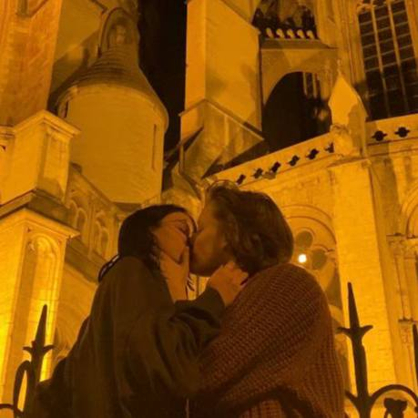
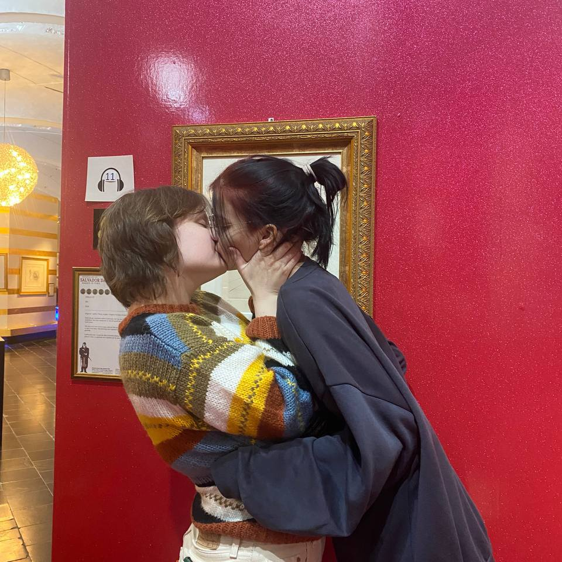
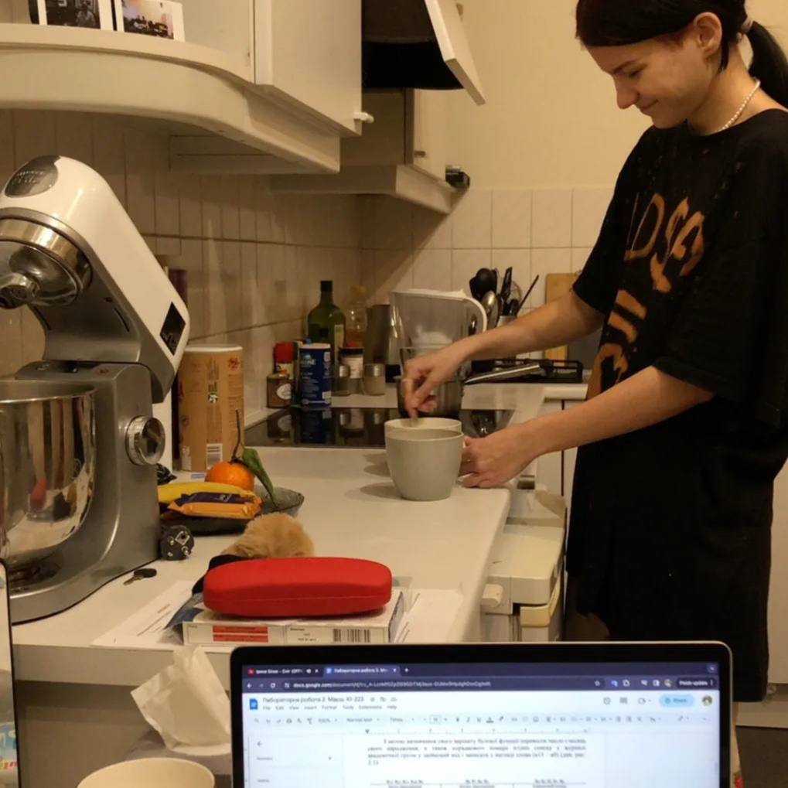
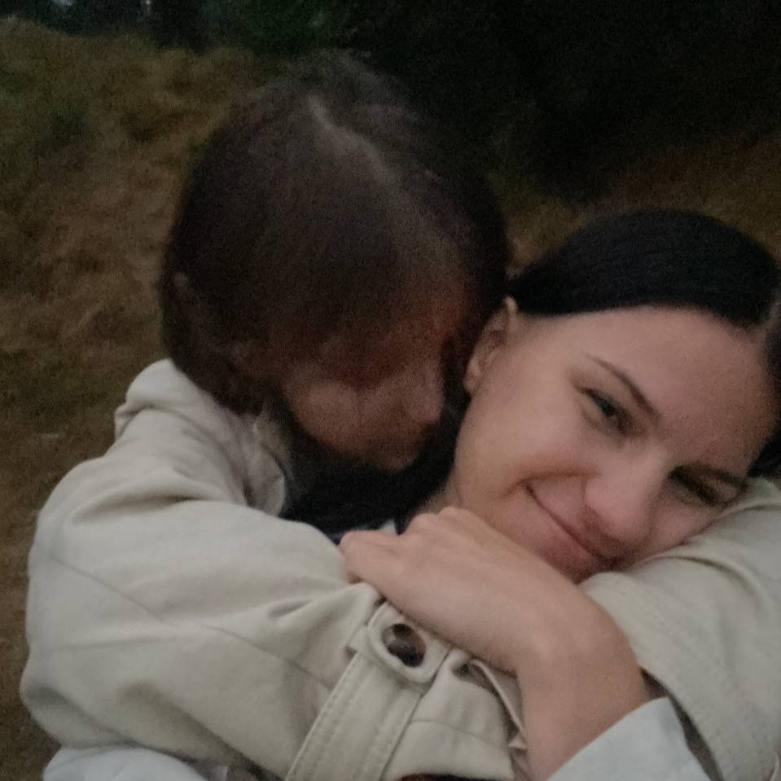
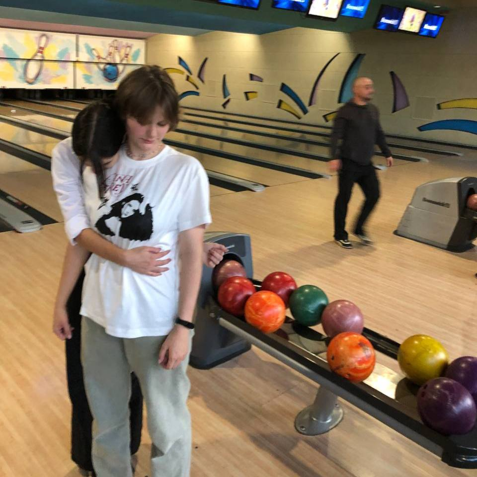

З Днем Закоханих, люба
Ти найкраще в моєму житті, що зі мною траплялося, кохаю тебе!
    
Вона любить ходити босоніж і спати на животі,
щоби краще чути, як нафта рухається під землею,
як народжуються дерева в темряві й пустоті
і вода, підіймаючись, перетікає просто під нею.
Вона знає в цьому місті адреси всіх прохідних дворів
і маршрутки квартирних злодіїв між підвалами та дахами,
вона вміє ловити повітряних зміїв і дирижаблі без якорів
з вуличними вартовими й повітряними пастухами.
І кожен підліток хотів би впіймати її за плече,
знаючи, що вона все одно втече,
ловлячи лише рештки її тепла,
не вірячи, що вона й справді тут щойно була.
І кожен убивця проводжає її крізь пітьму,
з надією, що вона буде снитись йому,
з певністю, що вона забуде його ім’я,
не розуміючи, ким їй насправді доводжусь я.
Тому що вона любить гріти долоні в сховах чужих кишень,
і знає кожного контролера в нічних трамваях,
і вітається з ними щоразу для того лишень,
аби порушити їхню самотність, що до ранку триває.
Адже кожен загублений контролер,
прикутий до власних страхів, мов до галер,
роздає безнадійно квитки, дивиться у вікно –
де вона, ця пасажирка, якій все одно,
на якій зупинці сходити у пітьму,
за яку нещасну любов жаліти себе саму,
за якими втратами шкодувати, за якими ні,
якими саме словами розповідати все це мені.
Я щаслива з тобою, я квітну, кохана)